Brand system
Nevron is a neutral frame for someone else's content.
That line from the guidelines decides everything below — restrained,
architectural, precise. The full specification lives in
plugins/nevron-brand/BRAND.md; the tokens live beside it.
01 — Colour
One blue scale, one grey scale, four functional colours
Always use the token, not the hex. Every value below is a custom property
in tokens/nevron-tokens.css.
Primary blues
Secondary greys
Supporting — functional only, never decorative
The rules
- Primary actions use M3. Emphasis uses M3 blue — not bold red.
- Body text is S1 on light, white on dark.
- Never mix primary blues with supporting colours as co-equal accents.
- WCAG AA minimum: 4.5:1 for body text, 3:1 for large text.
02 — Gradients
Two approved patterns. There is no third.
1 — Blue gradient · text accents, decorative elements
linear-gradient(135deg, M3, M4, M5) — token
--nevron-gradient-blue.
2 — Dark gradient · dark backgrounds, hero sections
A radial glow of M3 over M1 Navy — token --nevron-gradient-dark. Corner
and edge positions are all on-brand; the hero on these pages is one of them.
2b — Subtler variant · M2 instead of M3
Token --nevron-gradient-dark-subtle.
Not allowed
Linear gradients across the full colour scale · gradients involving red, orange, yellow or green · gradients mixing blues with greys · multi-stop decorative gradients outside these two patterns.
Applying the blue gradient as background-clip: text clips descenders.
Set display: inline-block and line-height: 1.4 on the
gradient element.
03 — Typography
Neue Haas Unica, with Open Sans as the free fallback
font-family: 'Neue Haas Unica', 'Open Sans', 'Helvetica Neue', Arial, sans-serif;Display · 48px · 700 · line-height 1.1
Smart solutions for smart hotels
H1 · 36px · 300 light — the thin weight is deliberate
Elevating guest experience
H2 · 28px · 600
Section heading
Body · 16px · 400 · line-height 1.5
Nevron provides a neutral frame for the display of content. The brand recedes so the property's own material can carry the screen — which is why the palette is restrained and the geometry is not.
| Level | Size | Weight | Line height | Use |
|---|---|---|---|---|
| Display | 3rem / 48px | 700 | 1.1 | Hero headlines |
| H1 | 2.25rem / 36px | 300 | 1.15 | Page titles |
| H2 | 1.75rem / 28px | 600 | 1.2 | Section headings |
| H3 | 1.375rem / 22px | 600 | 1.25 | Subsections |
| H4 | 1.125rem / 18px | 600 | 1.3 | Card titles, labels |
| Body large | 1.125rem / 18px | 400 | 1.6 | Lead paragraphs |
| Body | 1rem / 16px | 400 | 1.5 | Default |
| Body small | 0.875rem / 14px | 400 | 1.5 | Captions, metadata |
| Caption | 0.75rem / 12px | 400 | 1.4 | Fine print |
remfor every font size.- Two or three weights per page. Headings 600–700, body 400.
- Line length 60–75 characters.
04 — Geometry
Corner radius is 0. This is a hard rule.
Sharp corners are the brand's visual language — architectural, confident, precise. Rounding them softens Nevron into every other SaaS template.
Rounded cards dilute the architectural feel the brand is built on.
Use --nevron-radius-lg (value 0) on every card. Always.
| Element | Radius | Token |
|---|---|---|
| Cards | 0 — always | --nevron-radius-lg |
| Buttons, inputs | 0 | --nevron-radius-md |
| Modals, large containers | 0 | --nevron-radius-xl |
| Hero sections | 0 | --nevron-radius-2xl |
| Tags, indicators, badges | 0.25rem (exception) | --nevron-radius-sm |
| Pills, avatars | 9999px (exception) | --nevron-radius-full |
05 — Logo
Seven files. Never a re-drawn one.
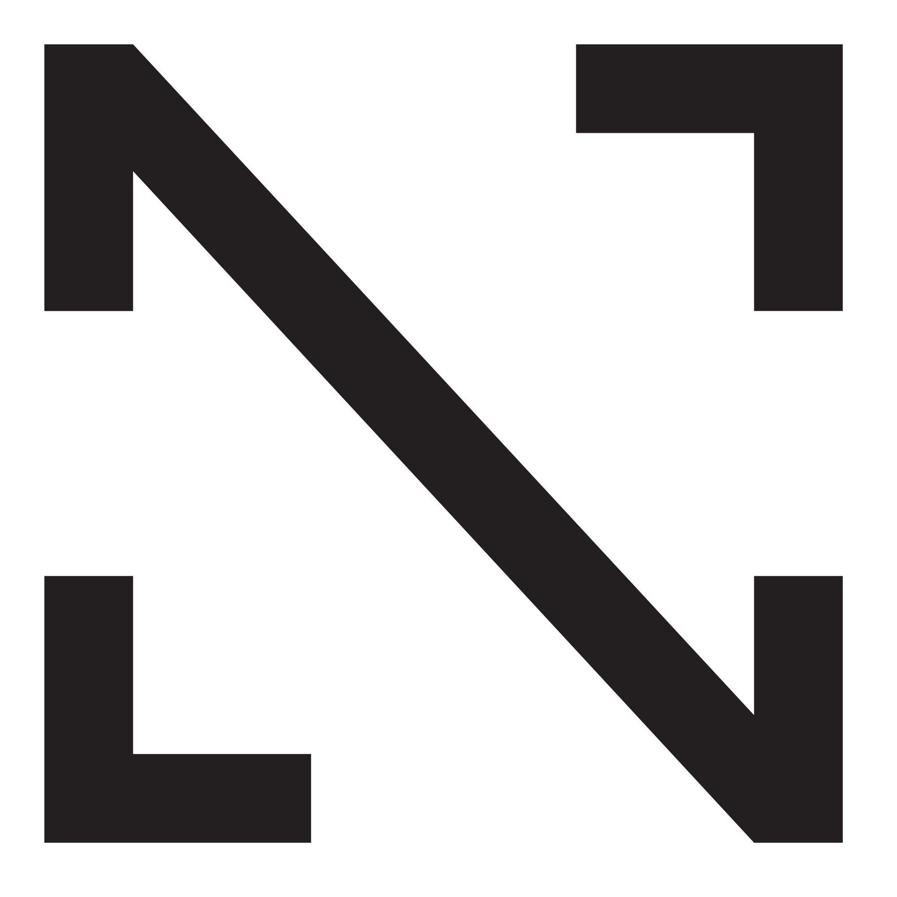
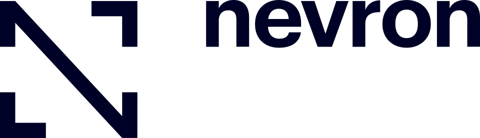
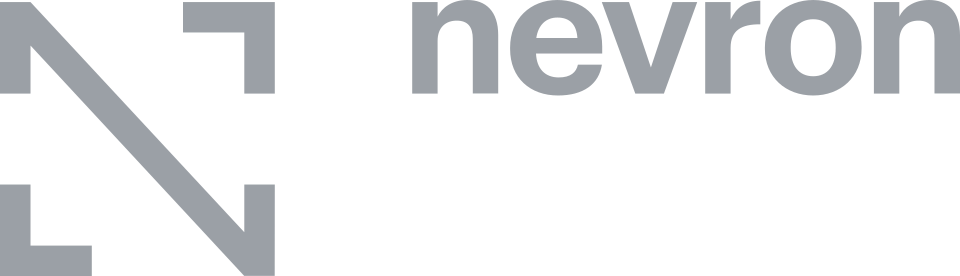
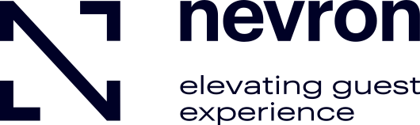
Choosing one
Space < 80px? → Monogram / icon
First-impression (hero)? → With tagline
Nav, header, repeated? → Without tagline
Dark background? → White variant
Light background? → Blue variant- Clear space — minimum 1/3 of logo height on all sides; 2/3 is better.
- Minimum size — monogram 24px, wordmark 80px wide, with tagline 120px wide.
- Never stretch, distort, rotate, recolour, add effects, or place it on a busy background.
Never inline or recreate the logo SVG
Copy the source file out of assets/logos/ and reference it with
<img>. Redrawing the paths from memory produces garbled
letterforms, and “it should be a single self-contained file” is not a
good enough reason.
06 — The frame
The frame marks content. That is its whole job.
A pair of corner brackets — top-right and bottom-left — filled with a pattern, sharing the monogram's grid. Not a border, not a decorative flourish, and never hand-built out of rectangles.
Eight of the 19 approved patterns. The variants signal the variety of the content platforms — pick one deliberately and keep it consistent within a single piece.
| Use | Verdict |
|---|---|
| Document and datasheet covers | Yes — the established use |
| Back cover with “Let there be content!” | Yes |
| A deck's title, section and closing slides | Yes |
| Framing one deliberate image or statement | Yes, sparingly |
| A small mark on every content slide | No — repetition empties it |
| Pulled apart into a single bar or arm | No — that is not the shape |
| Behind body copy or a table | No |
The slogan that goes with the frame is “Let there be content” — which is why it closes the documents and the datasheets.
07 — Icons
PrimeIcons first, custom Nevron icons second
No inline SVGs, no Heroicons, no Lucide. Verify a name against
assets/primeicons-list.txt — 314 verified names — before using it. An
unverified name renders as a blank space.
<link rel="stylesheet" href="https://cdn.jsdelivr.net/npm/primeicons/primeicons.css">
<i class="pi pi-check"></i>The custom set — 128 icons, used only where PrimeIcons has no equivalent
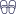
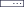
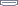
| Folder | Count | What is in it |
|---|---|---|
icons/web/ | 46 | Product and platform features |
icons/contentware/ | 62 | Hotel services and content |
icons/technical/ | 20 | Infrastructure and tech |
Naming is PascalCase with a B suffix for the blue variant —
RoomControlB.svg, PowerfulCMSB.svg.
08 — Voice
Clear, direct, technically competent
Never salesy, never hyperbolic. Jargon with technical audiences, plain language with hotel staff.
| Trait | Meaning |
|---|---|
| Professional | Enterprise-grade reliability, trustworthy |
| Modern | Clean, contemporary design language |
| Innovative | Forward-thinking tech solutions |
| Approachable | Warm enough for hospitality, not cold corporate |
| Confident | Bold in capability claims, backed by substance |
Smart solutions for smart hotels
The company line.
Let there be content
Goes with the frame, on cover surfaces.
NevronCore
One word, capital N and C. Never “Nevron Core”. A platform, not software.